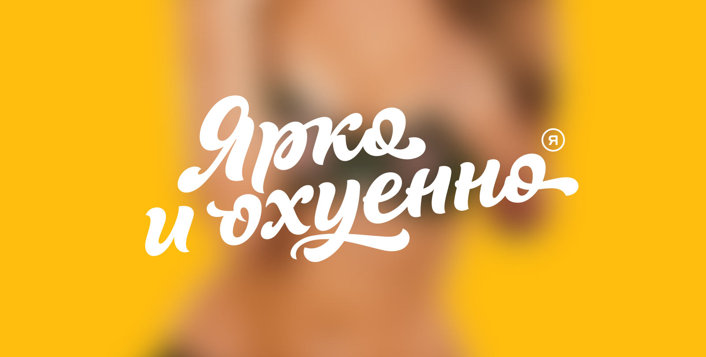
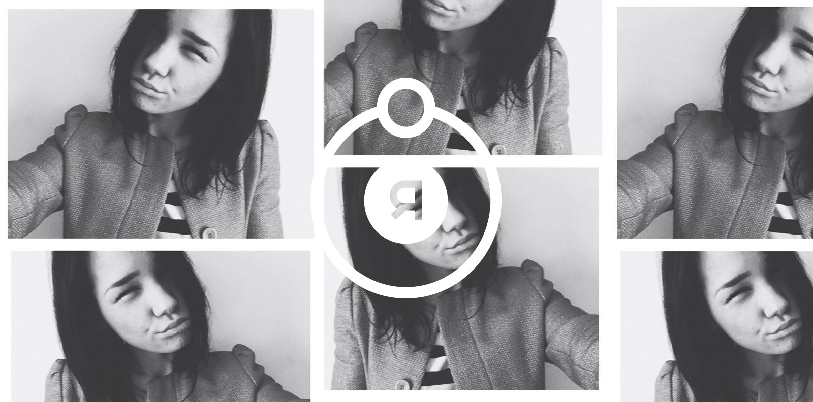
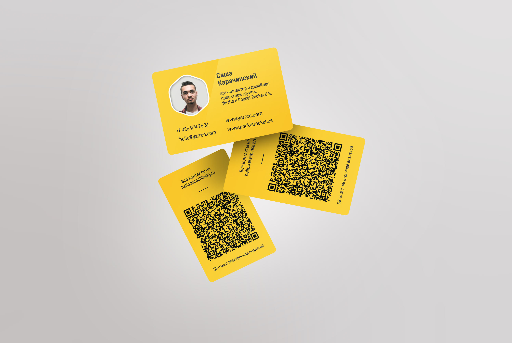
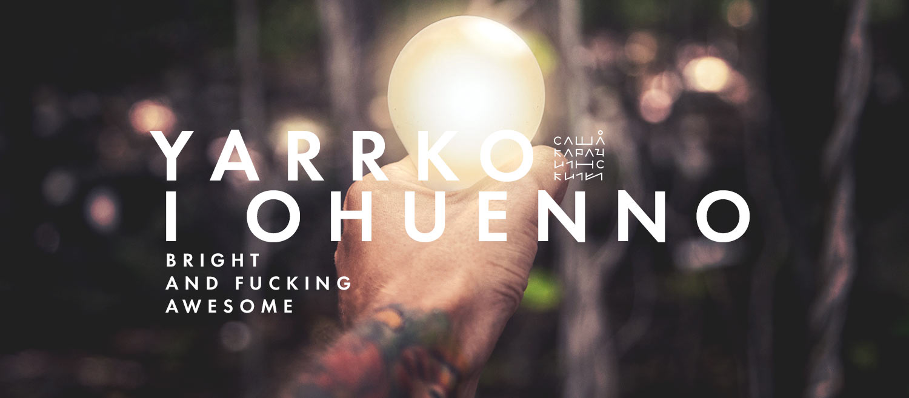
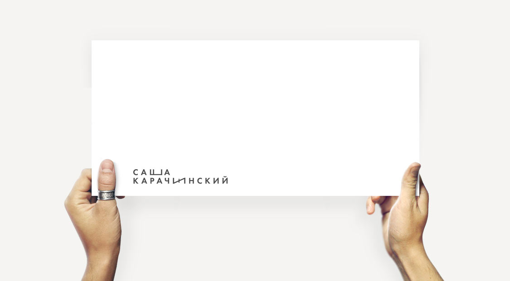
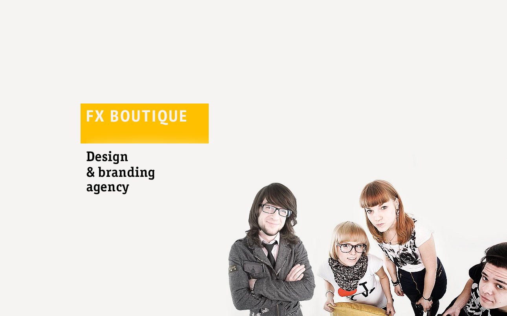

2 сентябрь 2013
Бренд «Ярко и охуенно»
Долгое время я работал используя исключительно свою фамилию — портфолио и по сей день размещено по адресу www.karachinsky.ru.
Но однажды все изменилось.
Было решено создать свой бренд — запоминающийся, легкий, наглый — «яркий и охуенный». Позже слоган трансформировался в «Ярко и охуенно» и был зарегистрирован домен www.yarrco.com.
В 2015 году я создал новую уверенную и более выразительную версию логотипа

Следом был выполнен уникальный авторский леттеринг

В основе знака — Солнце, планета, орбита и отсыл к старой идее геоцентричности нашего мира. Далее геоцентризм заменяем на эгоцентризм. Я—эго, всё вращается вокруг этого самого Я. Солнце на орбите — литера О.
На фото — Саша Мишина —
моя хорошая подруга и муза.
«Все женщины знают, что ритм как солнце,
А мы вокруг него как планеты»
Аквариум «Zoom Zoom Zoom»

В комплекте к бренду как всегда — визитки
На момент печати первого тиража логотипа еще не было.
В QR-коде закодирована vCard — электронная визитка. Сканируем код и все мои контакты автоматически добавляются в ваш смартфон.

Немного истории
Бренд развивался постепенно.
Лампочка нашлась на необитаемом острове в Камбодже.
Внимательный читатель заметит, что написание слова ярко еще старое (до покупки домена).

Самый первый слоган и логотип

2011-ый. Текстовый логотип

FX Boutique. Студия дизайна и медиатворчества.
2009-ый год — первые попытки самостоятельного бизнеса.
«Мы — друзья, коллеги или знакомые. Мы любим всё красивое: музыку, картинки, логотипы, машины, женщин.
[...]
Каждый в нашей команде занимается тем, что ему действительно нравится: дизайном полиграфической продукции, разработкой фирменных стилей, логотипов и ещё много чем весьма интересным и совершенно по–разному связанным с дизайном, ведь искусство многогранно и мы рады иметь возможности находить вдохновение в других его областях, отличных от графической, в нашем случае.»
— С сайта студии.

Промо-ролик из тех же времен
Самое начало